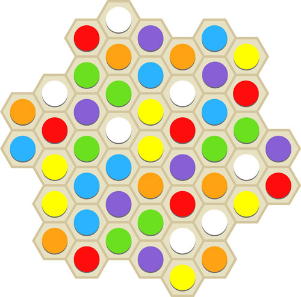
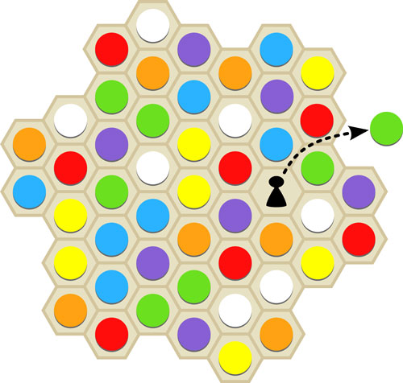
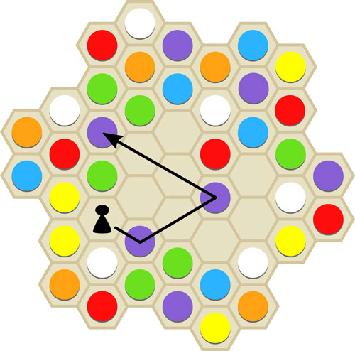
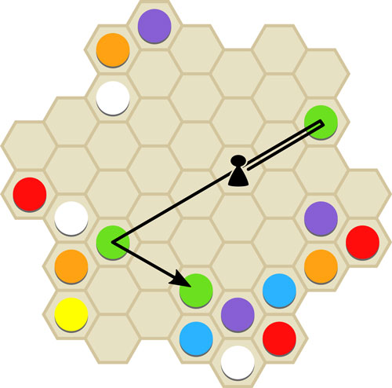
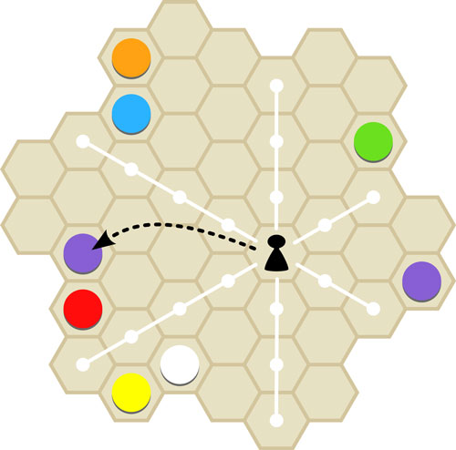

Règles du jeu
Objectif
Récupérer les 7 pièces d'une couleur ou gagner par majorité.
Préparation
Les pièces doivent être réparti de façon aléatoire sur le plateau.
Cela n'a pas d'importance si deux ou plusieurs pièces de la même couleur sont l'une à côté de l'autre. Si 7 pièces de la même couleur sont adjacentes à une autre, il faut changer la distribution.
Le premier joueur est tiré au sort, il obtient le pion.

Jeu

Le premier joueur place le pion sur un hexagone de son choix, prend le pion qui se trouve là et le place devant lui. Cela termine son tour de jeu.
A partir de maintenant, le joueur actif doit déplacer le pion dans l'une des six directions possibles. Le cas échéant, à travers les espaces inoccupés jusqu'à ce qu'il atteigne un espace occupé. Il recueille la pièce de jeu se trouvant sur cet espace et place le pion là.


S'il peut récolter une autre pièce de la même couleur en continuant à déplacer le pion, le joueur actif peut continuer jusqu'à ce qu'il ne soit plus capable ou désireux de collecter une autre pièce de même couleur.
Si un joueur n'a aucune possibilité de se déplacer parce que le pion n'est pas aligné avec un espace occupé, il doit sauter le pion dans n'importe quel espace et récupérer la pièce qui s'y trouve. Comme auparavant, il laisse le pion sur cet espace, et son tour se termine.

Fin de la partie
Si un joueur a rassemblé les sept pièces d'une couleur, il gagne immédiatement.
Sinon, le joueur qui a récolté quatre pièces ou plus sur au moins quatre couleurs à la fin du jeu gagne.